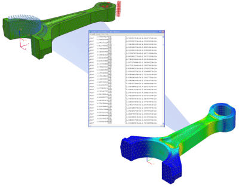

设计仿真将使用 NX 来对有限元模型进行前后处理，并使用有限元求解器来求解有限元模型，NX 将与有限元求解器进行如下交互：
NX 将写出一个特定于求解器的二进制输入文件，这个文件：
包括网格数据、边界条件以及包含在有限元模型中的求解器参数
储存在与仿真文件(*.sim)相同的目录中。
有限元求解器将运行解算批处理命令，并在与仿真文件(*.sim)相同的目录中写出结果文件。
NX 将读取结果文件，并在后处理中显示结果。
